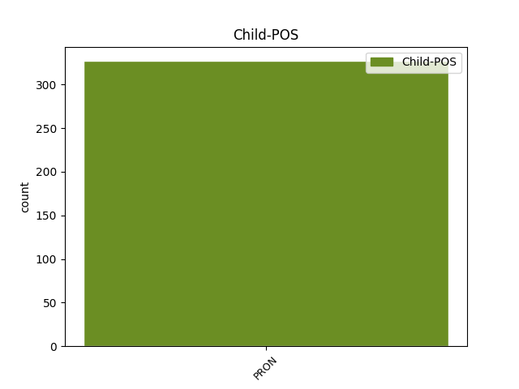

Distribution of features within this leaf



Agreement Rules sorted by frequency.
- When the dependent token is the parataxis(parataxis) of the head token, and the head token is AUX and the dependent token is VERB.
1 Suomen _ _ _ _ 0 _ _ _
2 väliluvun _ _ _ _ 0 _ _ _
3 kasvu _ _ _ _ 0 _ _ _
4 oli olla AUX V Mood=Ind|Number=Sing|Person=3|Tense=Past|VerbForm=Fin|Voice=Act 0 _ _ _
5 suurinta _ _ _ _ 0 _ _ _
6 15 _ _ _ _ 0 _ _ _
7 vuoteen _ _ _ _ 0 _ _ _
8 ja _ _ _ _ 0 _ _ _
9 vuoden _ _ _ _ 0 _ _ _
10 lopulla _ _ _ _ 0 _ _ _
11 väkiluku _ _ _ _ 0 _ _ _
12 yltää _ _ _ _ 0 _ _ _
13 5,5 _ _ _ _ 0 _ _ _
14 miljoonaan _ _ _ _ 0 _ _ _
15 , _ _ _ _ 0 _ _ _
16 arvioi arvioida VERB V Mood=Ind|Number=Sing|Person=3|Tense=Pres|VerbForm=Fin|Voice=Act 4 parataxis _ _
17 Tilastokeskus _ _ _ _ 0 _ _ _
18 . _ _ _ _ 0 _ _ _
1 Tapahtuma _ _ _ _ 0 _ _ _
2 on olla AUX V Mood=Ind|Number=Sing|Person=3|Tense=Pres|VerbForm=Fin|Voice=Act 0 _ _ _
3 kerännyt _ _ _ _ 0 _ _ _
4 vuosi _ _ _ _ 0 _ _ _
5 vuodelta _ _ _ _ 0 _ _ _
6 enemmän _ _ _ _ 0 _ _ _
7 kävijöitä _ _ _ _ 0 _ _ _
8 – _ _ _ _ 0 _ _ _
9 vuonna _ _ _ _ 0 _ _ _
10 2005 _ _ _ _ 0 _ _ _
11 järjestetyssä _ _ _ _ 0 _ _ _
12 ensimmäisessä _ _ _ _ 0 _ _ _
13 tapahtumassa _ _ _ _ 0 _ _ _
14 kävijöitä _ _ _ _ 0 _ _ _
15 oli olla AUX V Mood=Ind|Number=Sing|Person=3|Tense=Past|VerbForm=Fin|Voice=Act 2 parataxis _ _
16 noin _ _ _ _ 0 _ _ _
17 tuhat _ _ _ _ 0 _ _ _
18 , _ _ _ _ 0 _ _ _
19 vuonna _ _ _ _ 0 _ _ _
20 2006 _ _ _ _ 0 _ _ _
21 noin _ _ _ _ 0 _ _ _
22 1 800 _ _ _ _ 0 _ _ _
23 ja _ _ _ _ 0 _ _ _
24 vuonna _ _ _ _ 0 _ _ _
25 2008 _ _ _ _ 0 _ _ _
26 noin _ _ _ _ 0 _ _ _
27 2 800 _ _ _ _ 0 _ _ _
28 . _ _ _ _ 0 _ _ _
Disagree Examples:
1 Samalla _ _ _ _ 0 _ _ _
2 voisi voida AUX V Mood=Cnd|Number=Sing|Person=0|VerbForm=Fin|Voice=Act 0 _ _ _
3 laatikon _ _ _ _ 0 _ _ _
4 päälle _ _ _ _ 0 _ _ _
5 kirjoittaa _ _ _ _ 0 _ _ _
6 : _ _ _ _ 0 _ _ _
7 ” _ _ _ _ 0 _ _ _
8 Tämän _ _ _ _ 0 _ _ _
9 lapseni _ _ _ _ 0 _ _ _
10 heittävät heittää VERB V Mood=Ind|Number=Plur|Person=3|Tense=Pres|VerbForm=Fin|Voice=Act 2 parataxis _ _
11 roskiin _ _ _ _ 0 _ _ _
12 purkaessaan _ _ _ _ 0 _ _ _
13 jäämistöäni _ _ _ _ 0 _ _ _
14 vuonna _ _ _ _ 0 _ _ _
15 XXXX _ _ _ _ 0 _ _ _
16 … _ _ _ _ 0 _ _ _
17 ” _ _ _ _ 0 _ _ _
18 : D _ _ _ _ 0 _ _ _
1 ” _ _ _ _ 0 _ _ _
2 30:n _ _ _ _ 0 _ _ _
3 vauhti _ _ _ _ 0 _ _ _
4 ei ei AUX V Number=Sing|Person=3|Polarity=Neg|VerbForm=Fin|Voice=Act 0 _ _ _
5 liene _ _ _ _ 0 _ _ _
6 liioiteltua _ _ _ _ 0 _ _ _
7 50:n _ _ _ _ 0 _ _ _
8 alueella _ _ _ _ 0 _ _ _
9 ” _ _ _ _ 0 _ _ _
10 , _ _ _ _ 0 _ _ _
11 mutisen mutista VERB V Mood=Ind|Number=Sing|Person=1|Tense=Pres|VerbForm=Fin|Voice=Act 4 parataxis _ SpaceAfter=No
12 . _ _ _ _ 0 _ _ _
1 Tai _ _ _ _ 0 _ _ _
2 se _ _ _ _ 0 _ _ _
3 on olla AUX V Mood=Ind|Number=Sing|Person=3|Tense=Pres|VerbForm=Fin|Voice=Act 0 _ _ _
4 - _ _ _ _ 0 _ _ _
5 en ei AUX V Number=Sing|Person=1|Polarity=Neg|VerbForm=Fin|Voice=Act 3 parataxis _ _
6 oleta _ _ _ _ 0 _ _ _
7 sitä _ _ _ _ 0 _ _ _
8 teidän _ _ _ _ 0 _ _ _
9 osalta _ _ _ _ 0 _ _ _
10 , _ _ _ _ 0 _ _ _
11 mutta _ _ _ _ 0 _ _ _
12 niiden _ _ _ _ 0 _ _ _
13 , _ _ _ _ 0 _ _ _
14 jotka _ _ _ _ 0 _ _ _
15 tekivät _ _ _ _ 0 _ _ _
16 sopimuksen _ _ _ _ 0 _ _ _
17 sillä _ _ _ _ 0 _ _ _
18 tavalla _ _ _ _ 0 _ _ _
19 ja _ _ _ _ 0 _ _ _
20 jotka _ _ _ _ 0 _ _ _
21 myös _ _ _ _ 0 _ _ _
22 soveltavat _ _ _ _ 0 _ _ _
23 turvallisuuslauseketta _ _ _ _ 0 _ _ _
24 niin _ _ _ _ 0 _ _ _
25 yksipuolisesti _ _ _ _ 0 _ _ _
26 - _ _ _ _ 0 _ _ _
27 kyynistä _ _ _ _ 0 _ _ _
28 asianomaisen _ _ _ _ 0 _ _ _
29 väestön _ _ _ _ 0 _ _ _
30 ongelmien _ _ _ _ 0 _ _ _
31 ylenkatsomista _ _ _ _ 0 _ _ _
32 . _ _ _ _ 0 _ _ _
1 Mielestäni _ _ _ _ 0 _ _ _
2 tärkeintä _ _ _ _ 0 _ _ _
3 on _ _ _ _ 0 _ _ _
4 ennen _ _ _ _ 0 _ _ _
5 kaikkea _ _ _ _ 0 _ _ _
6 , _ _ _ _ 0 _ _ _
7 että _ _ _ _ 0 _ _ _
8 meillä _ _ _ _ 0 _ _ _
9 on _ _ _ _ 0 _ _ _
10 täysin _ _ _ _ 0 _ _ _
11 johdonmukainen _ _ _ _ 0 _ _ _
12 lainsäädäntö _ _ _ _ 0 _ _ _
13 , _ _ _ _ 0 _ _ _
14 ja _ _ _ _ 0 _ _ _
15 1 000 _ _ _ _ 0 _ _ _
16 metrin _ _ _ _ 0 _ _ _
17 syvyyttä _ _ _ _ 0 _ _ _
18 koskevan _ _ _ _ 0 _ _ _
19 ongelman _ _ _ _ 0 _ _ _
20 ytimenä _ _ _ _ 0 _ _ _
21 on _ _ _ _ 0 _ _ _
22 se _ _ _ _ 0 _ _ _
23 , _ _ _ _ 0 _ _ _
24 että _ _ _ _ 0 _ _ _
25 on olla AUX V Mood=Ind|Number=Sing|Person=0|Tense=Pres|VerbForm=Fin|Voice=Act 0 _ _ _
26 hyödytöntä _ _ _ _ 0 _ _ _
27 kieltää _ _ _ _ 0 _ _ _
28 kalastus _ _ _ _ 0 _ _ _
29 alle _ _ _ _ 0 _ _ _
30 1 000 _ _ _ _ 0 _ _ _
31 metrin _ _ _ _ 0 _ _ _
32 syvyydessä _ _ _ _ 0 _ _ _
33 muilla _ _ _ _ 0 _ _ _
34 Euroopan _ _ _ _ 0 _ _ _
35 yhteisön _ _ _ _ 0 _ _ _
36 vesillä _ _ _ _ 0 _ _ _
37 ja _ _ _ _ 0 _ _ _
38 samanaikaisesti _ _ _ _ 0 _ _ _
39 sallia _ _ _ _ 0 _ _ _
40 kalastus _ _ _ _ 0 _ _ _
41 1 000 _ _ _ _ 0 _ _ _
42 metrin _ _ _ _ 0 _ _ _
43 syvyydessä _ _ _ _ 0 _ _ _
44 Euroopan _ _ _ _ 0 _ _ _
45 yhteisön _ _ _ _ 0 _ _ _
46 vesillä _ _ _ _ 0 _ _ _
47 - _ _ _ _ 0 _ _ _
48 tässä _ _ _ _ 0 _ _ _
49 ei ei AUX V Number=Sing|Person=3|Polarity=Neg|VerbForm=Fin|Voice=Act 25 parataxis _ _
50 ole _ _ _ _ 0 _ _ _
51 lainsäädännön _ _ _ _ 0 _ _ _
52 ympäristönäkökohdan _ _ _ _ 0 _ _ _
53 kannalta _ _ _ _ 0 _ _ _
54 mitään _ _ _ _ 0 _ _ _
55 järkeä _ _ _ _ 0 _ _ _
56 . _ _ _ _ 0 _ _ _
1 Virnistys _ _ _ _ 0 _ _ _
2 oli olla AUX V Mood=Ind|Number=Sing|Person=3|Tense=Past|VerbForm=Fin|Voice=Act 0 _ _ _
3 haaste _ _ _ _ 0 _ _ _
4 : _ _ _ _ 0 _ _ _
5 Musta _ _ _ _ 0 _ _ _
6 sekä _ _ _ _ 0 _ _ _
7 Valkoinen _ _ _ _ 0 _ _ _
8 , _ _ _ _ 0 _ _ _
9 on olla AUX V Mood=Ind|Number=Sing|Person=0|Tense=Pres|VerbForm=Fin|Voice=Act 2 parataxis _ _
10 aika _ _ _ _ 0 _ _ _
11 pelata _ _ _ _ 0 _ _ _
12 . _ _ _ _ 0 _ _ _